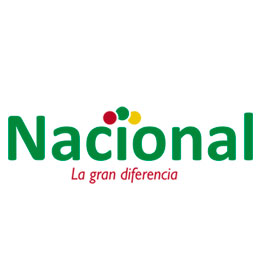
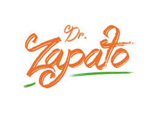

Supermercados Nacional
Mi objetivo en este nuevo logo principalmente es hacer un diseño mas simple, que sea agradable y fácil de mantenerse en la mente del consumidor de manera memorable. De esta manera también podrá tener escalabilidad y armonía. Quiero mantener los colores pero que aun pueda ser un buen logo que no luzca exagerado. Y así también mantener la esencia de un Super Mercado confiable y tradicional que se encuentra en la vida de los dominicanos hace mas de 70 anos. Mantener una tipografía sans serif que represente la marca que es familiar, amigable y versátil. Retirar totalmente todo tipo de bordes y rellenos ya que no se mantiene a la hora de colocar el logo en pequeña escala y también lo hace lucir muy cargado. Finalmente, que se mantenga muy solido y sencillo porque es la mejor forma de que logre comunicar a que se dedica la marca y que representa.

Dr. Zapato
Para la elaboración de este logo decidí enfocarme principalmente en el nuevo público de la marca, creando un logo que se relacionara directamente con ellos. Utilicé una tipografía creada con una técnica llamada “Lettering”, éste es el arte de dibujar letras sin ningún tipo de barreras. Esta técnica se ha convertido en una tendencia a nivel mundial hasta llegar a la República Dominicana. Es una técnica que normalmente se ha conocido como un hobbie pero que está emergiendo en el mundo de las marcas. Ésta tipografía da movimiento y ligereza, simulando un sketch. Representando totalmente a Dr. Zapato no sólo como una reparadora, sino como artesanos que se rigen bajo un mismo concepto artístico. Creando ese efecto de manualidad y destreza. El lettering nos da no solo juventud, sino también diversión, versatilidad e innovación. Implementando el lema “menos es más” decidí mantenerlo sólo tipográfico. Esto permite que sea simple, moderno y memorable. Finalmente, mantuve el verde y naranja representando la marca con sus colores tradicionales. El verde representa frescor, equilibrio y armonía. Mientras que el naranja representa actividad, expansión, persuasión y creatividad.